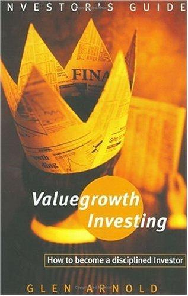

格伦·阿诺德（Glen Arnold）是英国萨尔福德大学（University of Salford）金融学教授，长期从事投资研究与教学工作，同时也是一位亲身实践的投资人。《价值成长投资》出版于2002年，由英国培生集团旗下的金融时报普伦蒂斯霍尔出版社（Financial Times/Prentice Hall）发行，ISBN为9780273656258。本书后来经过修订，以《金融时报价值投资指南》（The Financial Times Guide to Value Investing）为题再版，可见其核心内容经受住了时间考验。这本书写作风格平实而严谨，既适合有一定基础的个人投资者，也对机构分析师具有参考价值。阿诺德将其视为一部将投资理论与商业分析融为一体的系统性著作，而非泛泛的市场操作手册。
本书的结构分为两大部分。第一部分系统梳理了投资史上最具影响力的几位大师——本杰明·格雷厄姆（Benjamin Graham）、菲利普·费雪（Philip Fisher）、沃伦·巴菲特（Warren Buffett）、彼得·林奇（Peter Lynch）——的投资哲学，通过对他们思想渊源与实际操作的详细分析，帮助读者理解各流派的内在逻辑与适用场景。第二部分则是本书的核心创见：阿诺德将上述各家精髓融合提炼，形成他所称的“价值成长法”（Valuegrowth Method）。这一方法的基础是“所有者盈余”（owner earnings）这一概念——由巴菲特从费雪的思想中发展而来，指企业为所有者真正产生的自由现金流，而非会计报表上的净利润数字。阿诺德认为，一只股票的内在价值，归根到底是这些所有者盈余的现值之和；而影响内在价值的关键因素，则是企业经济护城河的强度与持久性、管理层的诚信与能力，以及财务状况的稳健性。
“价值成长”这一概念的提出，旨在调和价值投资与成长投资这两个表面上对立的流派。传统的格雷厄姆式价值投资侧重于以低于资产价值的价格买入，而费雪和林奇式的成长投资则更关注公司未来的盈利扩张。阿诺德认为，这两种视角并不矛盾——真正好的投资机会恰恰出现在具有持续成长潜力的优质企业被市场短暂低估的时刻。书中还对“经济特许权”（economic franchise）这一概念做了详细阐释：一家拥有真正护城河的企业，能够在竞争压力下维持超额回报，而这正是投资人在评估内在价值时必须重点考察的维度。阿诺德结合战略分析工具（如波特五力模型）与财务分析方法，提供了一套相对完整的评估框架，使读者不仅能识别优质企业，也能在合理的价格区间内建立仓位。
本书出版后获得了投资教育领域较为积极的反响，被多所商学院和投资培训机构列为推荐读物。书中对格雷厄姆、巴菲特思想的梳理准确而有深度，对“所有者盈余”与“内在价值”概念的解读也与原典精神高度吻合。对于希望系统建立价值投资思维框架、而非仅依赖选股技巧的投资者而言，这本书提供了一个扎实的知识基础——它不会告诉你明天买什么，但会帮助你理解为什么某些企业值得长期持有，以及如何用纪律代替情绪，在复杂的市场环境中做出更理性的判断。